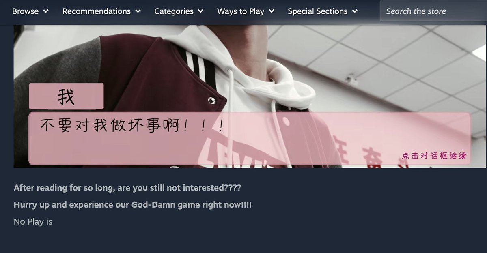
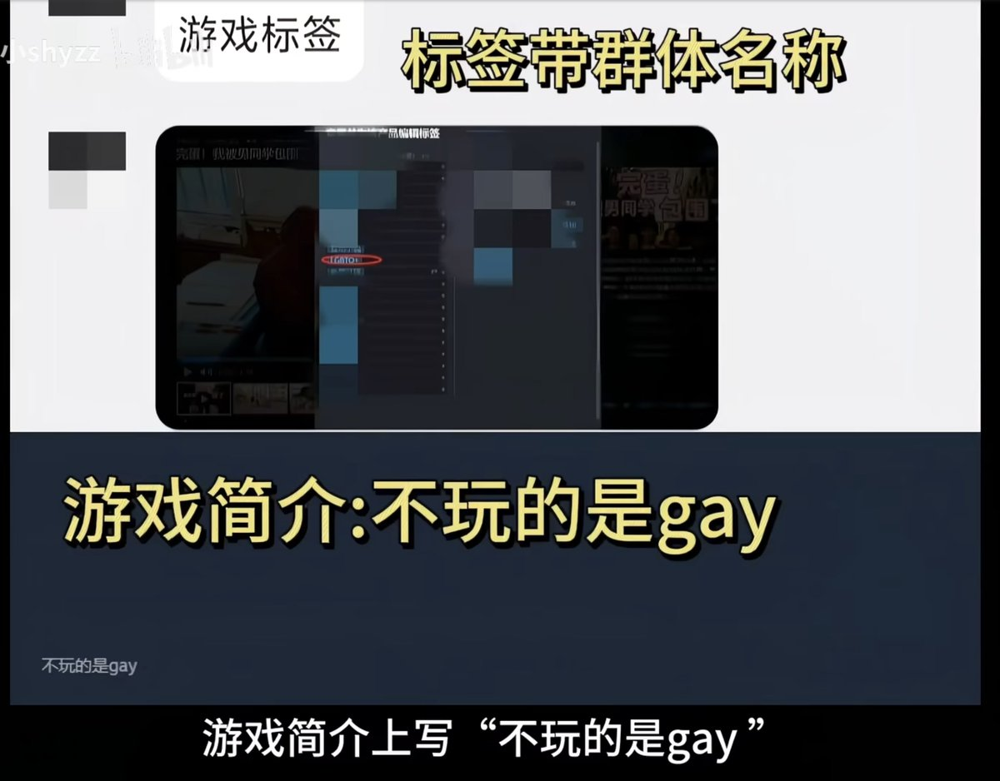

RT @QueerLawWatchCN: 国产校园游戏《完蛋！我被男同学包围了》爆红后，因为 LGBTQ+ 相关内容陷入争议🇨🇳🏳️🌈
2026年8月1日，一款由数名中国高中生自导、自演、自制的免费校园题材视觉小说《完蛋！我被男同学包围了》（英文名 SurroundedBy…

2026年8月1日，一款由数名中国高中生自导、自演、自制的免费校园题材视觉小说《完蛋！我被男同学包围了》（英文名 SurroundedBy…


国产校园游戏《完蛋！我被男同学包围了》爆红后，因为 LGBTQ+ 相关内容陷入争议🇨🇳🏳️🌈
2026年8月1日，一款由数名中国高中生自导、自演、自制的免费校园题材视觉小说《完蛋！我被男同学包围了》（英文名 SurroundedByBoys）登陆 Steam。 https://t.co/wlajEVahRj
2026年8月1日，一款由数名中国高中生自导、自演、自制的免费校园题材视觉小说《完蛋！我被男同学包围了》（英文名 SurroundedByBoys）登陆 Steam。 https://t.co/wlajEVahRj